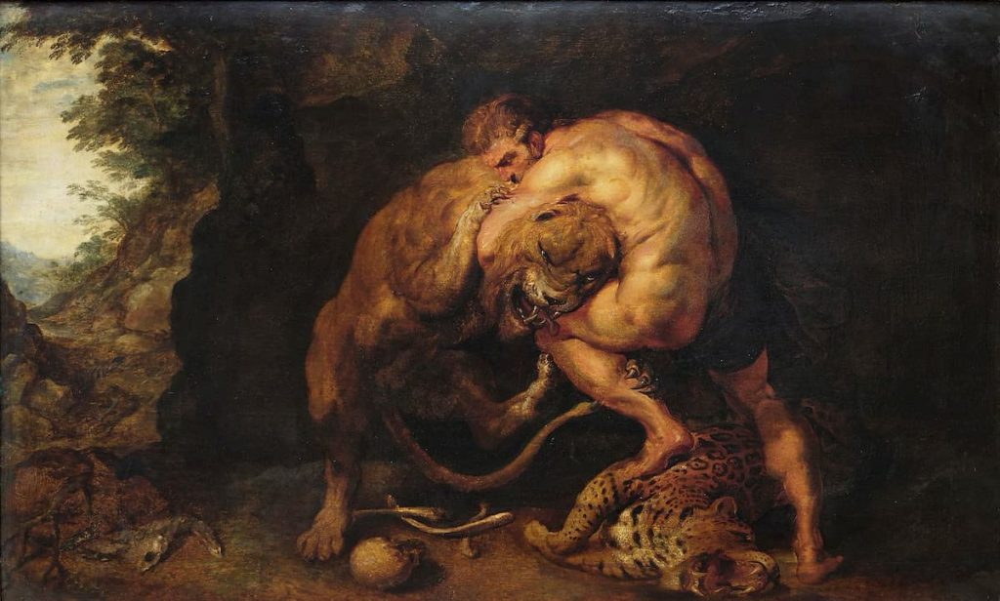

El Mito de los Semidioses Griegos: Héroes Entre Dioses y Hombres
Los semidioses, también conocidos como héroes, son figuras mitológicas nacidas de la unión entre un dios y un mortal, lo que los convierte en seres intermedios entre lo divino y lo humano. Aunque no poseían la inmortalidad de los dioses, estaban dotados de cualidades excepcionales como fuerza sobrehumana, inteligencia extraordinaria, valentía indomable o habilidades mágicas, lo que los hacía superiores al resto de los humanos. Los semidioses griegos eran protagonistas de muchas de las leyendas más famosas de la mitología y desempeñaban un papel fundamental como modelos de virtud, valor, ingenio o sufrimiento humano. Su existencia encarnaba la lucha entre el destino impuesto por los dioses y el libre albedrío del ser humano. Entre los más conocidos se encuentran Heracles (Hércules), hijo de Zeus y una mortal, famoso por sus doce trabajos; Perseo, vencedor de Medusa; Aquiles, el más grande guerrero de la Guerra de Troya, vulnerable solo en su talón; Teseo, quien venció al Minotauro; Orfeo, músico y poeta que intentó rescatar a su esposa del inframundo; o Atalanta, heroína veloz e indomable. Muchos de ellos eran fundadores míticos de ciudades, símbolos de valores cívicos y objeto de culto heroico, llegando incluso a ser venerados en templos y festivales como si fueran dioses. Su vida, sin embargo, estaba marcada por el sufrimiento, la tragedia y desafíos casi imposibles impuestos por los propios dioses, reflejando la condición humana en su lucha constante por alcanzar la gloria, el honor y, a veces, la redención. Los semidioses griegos representan la posibilidad del ser humano de superar sus límites, a menudo a través del dolor y la pérdida, y personifican ideales heroicos que inspiraron generaciones tanto en la Antigüedad como en la cultura moderna.
| Nombre | Padres | Rasgos Destacados | Hazañas o Historia |
|---|---|---|---|
| Heracles (Hércules) | Zeus y Alcmena (mortal) | Fuerza sobrehumana, valentía | Realizó los 12 trabajos impuestos por Euristeo; se convirtió en dios tras su muerte. |
| Perseo | Zeus y Dánae | Astucia, habilidad con la espada | Decapitó a Medusa y rescató a Andrómeda de un monstruo marino. |
| Teseo | Egeo (o Poseidón) y Etra | Ingenio, justicia | Mató al Minotauro en el laberinto de Creta; unificó Ática. |
| Aquiles | Peleo (mortal) y Tetis (ninfa) | Invulnerabilidad (excepto en el talón), fuerza | Héroe de la Guerra de Troya; murió por una flecha en el talón. |
| Orfeo | Apolo (o Eagro) y Calíope (musa) | Música divina, elocuencia | Intentó recuperar a su esposa Eurídice del inframundo encantando a Hades con su música. |
| Atalanta | Hija de reyes arcadios, criada por una osa | Velocidad, destreza en la caza | Participó en la caza del jabalí de Calidón y en la expedición de los argonautas. |
| Castor y Pólux (los Dióscuros) | Leda (mortal), Zeus (Pólux), Tindáreo (Castor) | Valor, hermandad | Protectores de marineros; convertidos en la constelación Géminis. |
| Eneas | Anquises (mortal) y Afrodita | Piedad, liderazgo | Sobrevivió a la caída de Troya; protagonista de la Eneida y antepasado mítico de Roma. |
